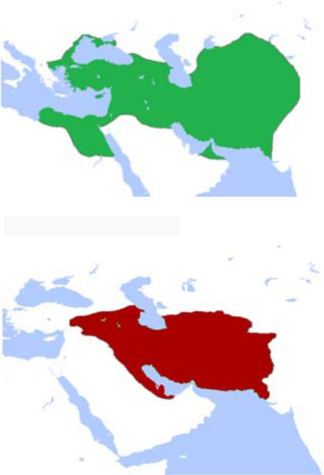
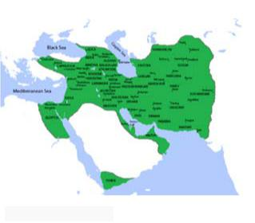

Dars-e 12 — Gozaštehā
Matn ♫ Gozaštehā
Sārā‐vo dustān‐aš aknun dar otāq‐e Sārā hastand. Sārā dārad az gozaštehā ta’rif mikonad va dustān‐aš dārand be ta’rif‐e u guš mikonand: *Yād‐eš be xeyr. Vaqt‐i man bacce budam, mādarbozorg‐am hanuz zende bud. Barā‐m qessehā‐ye xeyl‐i qašang‐i migoft. Moteassefāne un mariz šod‐o mord. Pedarbozorg‐am xeyl‐i negarān‐e man bud. Yek‐i az un ruzā dāštam televiziyon tamāšā mikardam, ke pedarbozorg‐am umad piš‐e man. Un man‐o ru zānu‐š nešund‐o barā‐m qesse goft. Az un ruz be ba’d harruz barā‐m qesse migoft. Qessehā‐š xeyl‐i xandedār budan, con man‐o un naqš‐e asli ro tu qessehā bāzi mikardim. Har kār‐ i ke del‐emun mixāst, tu un qessehā mikardim. Be har ciz‐i ke dust dāštim, miresidim. Vāqean ke yād‐eš be xeyr.*
Nokte
| Goftāri | Neveštāri |
|---|---|
| yād‐eš | yād‐aš |
| barā‐m | barā‐yam |
| un | ān |
| ruzā | ruzhā |
| umad | āmad |
| man‐o | ma‐rā [man rā] |
| ru | ru‐ye |
| zānu‐š | zānu‐yaš |
| nešund | nešānd |
| qessehā‐š | qessehā‐yaš |
| budan | budand |
| ro | rā |
| del‐emun | del‐emān |
Pāsox bedeh!
1. Sārā barā‐ye ce kasān‐i az gozaštehā ta’rif mikonad?
2. Mādarbozorg‐e sārā key mord?
3. Vaqt‐i pedarbozorg piš‐e Sārā āmad, Sārā dāšt cekār mikard?
4. Pedarbozorg Sārā rā kojā nešānd?
5. Cerā qessehā‐ye pedarbozorg xandedār budand?
Matn‐e ta’rif‐e Sārā rā az goftāri be neveštāri tabdil kon!
______________________________________ ______________________________________
Sāxtār
Sāxtār 44 Gozašte‐ye estemrāri
| | | | | | | |——————–|——————————————-|————— | —
| bordan | āmadangoftan neveštan | šostan raftan | |||
| Zamir | Pišvand‐e sarf | Setāk‐e gozašte | Šenāse | ||
| (man) | bord | am | |||
| (to) | i | ||||
| āmad | |||||
| (u) | mi | goft | |||
| nevešt | |||||
| (mā) | im | ||||
| šost | |||||
| (šomā) | id | ||||
| raft | |||||
| (ānhā) | and | ||||
Sāxtār 45 Moqāyese bā hāl‐e sāde
| Zamān | Nemune | ||||
| Hāl‐e sāde | Man harruz be dānešgāh miravam. | ||||
| Gozašte‐ye estemrāri | Man pārsāl harruz be dānešgāh miraftam. |
Nokte
- Gozašte‐ye estemrāri amal‐i rā bāzgu mikonad, ke be towr‐e monazzam dar gozašte anjām gerefte.
Sāxtār 46 Hāl‐e nātamām, gozašte‐ye nātamām
| Zamān | Sāxtār | Nemune |
| Hāl‐e nātamām | Hāl‐e sāde‐ye dāštan + hāl‐e sāde | Man al’ān dāram miravam. |
| **Gozašte‐ye nātamām **Gozašte‐ye sāde‐ye dāštan + gozašte‐ye estemrāri | Man ānmowqe’ dāštam miraftam. |
Nokte
- Hāl‐e nātamām amal‐i rā bāzgu mikonad, ke aknun dar hāl‐e anjām šodan‐ast. - Gozašte‐ye nātamām amal‐i rā bāzgu mikonad, ke dar yek maqta‐e gozašte dar hāl‐e anjām šodan bude. - Dar hāl‐e nātamām setāk‐e hāl‐e dāštan (dār) hamgām bā fe’l‐e asli sarf mišavad: dārad miravad. - Dar gozašte‐ye nātamām setāk‐e gozašte‐ye dāštan (dāšt) hamgām bā fe’l‐e asli sarf mišavad: dāšt miraft.
Irān‐o irāni Tārix-e Irān
Goftogu Ci meyl dārin?
Bā tavajjoh be qeyd‐e zamān jāhā‐ye xāli rā bā fe’l‐e monāseb por kon!
- Kāmrān pārsāl harruz futbāl __ __ (bāzi kardan). 2. Tā cand sāl piš mā dar Širāz __ __ (zendegi kardan). 3. Pedar‐am qablan __ __ (sigār kešidan) vali hālā bištar __ __ (pip kešidan). 4. Man pišazin xeyl‐i šokolāt __ (xordan) vali al’ān aslan __ __ (dust dāštan). 5. Dar gozašte az qahve __ __ (lezzat bordan), vali al’ān maze‐aš barā‐yam talx‐ast. 6. Man tā pārsāl morq‐o gušt‐o sosis rā az in forušgāh __ (xordan).
Jāhā‐ye xāli rā bā fe’l‐e monāseb por kon!
1.Al’ān dāri cekār mikoni? – __ televiziyon __ __ (tamāšā kardan).
- Diruz sobh dāšti cekār mikardi? – __ sobhāne __ (xordan). 3. Baccehā al’ān __ cekār __ (kardan)? – __ musiqi __ __ (guš dādan). 4. Dišab vaqt‐i ke āmadam, __ kojā __ (raftan)? – __ __ piš‐e dust‐am (raftan). 5. Parišab hengām‐i ke telefon zang zad, mašqul‐e ce kār‐i budi? – __ __ __ (duš gereftan). 6. Diruz dar forušgāh cekār mikardi? __ kare‐vo panir‐o xāme __ (xaridan).
Pāsox bedeh!
1) Diruz sobh dāšti cekār mikardi? __ 2) Al’ān mašqul‐e ce kār‐i hasti? __
Irān‐o irāni – Tārix‐e Irān
Dar hezāre‐ye dovvom‐e piš az milād Āryāyiyān, mardomān‐i hendoorupāyi, be Irān mohājerat kardand. Mādhā, Pārshā va Pārthā‐ye āryāyi harkodām dar mantaqe‐i az Irān sokunat kardand. Noxostin farmānravāyi rā dar Irān Mādhā 715 p.m. banā kardand. Pas az ānhā Kuroš‐e Bozorg Šāhanšāhi‐ye Haxāmaneši rā 559 p.m. ta’sis kard. In šāhanšāhi ānconān pahnāvar bud, ke tārixnegārān ān rā yek emperāturi‐ye jahāni midānand. Haxāmanešiyān be din, zabān va farhang‐e mardomān‐e digar ehterām migozāštand.
Pas az šekast‐e Haxāmanešiyān be dast‐e Eskandar‐e Maqduni dar 330 p.m. Solukiyān be qodrat residand vali kam‐i ba’d Aškāniyān‐e irāni ānhā rā az Irān rāndand va Emperāturi‐ye Rom rā niz be cāleš kešidand. Aškāniyān va pas az ānhā Sāsāniyān do šāhanšāhi‐ye bozorg‐o qodratmand‐i budand, ke tā hamle‐ye Arabhā be Irān dar miyāne‐ye sade‐ye 7om‐e milādi bar Irān hokumat mikardand. Dowre‐ye Sāsāniyān ta’sirgozārtarin dowre‐ye tārixi‐ye Irān be šomār miravad. Gostareš‐e nofuz‐e farhangi‐ ye Irān be šarq‐o qarb dar in dowrān cešmgir‐ast. Ta’sis va šokufāyi‐ye Dānešgāh‐e Gondišāpur be onvān‐e yek‐i az mohemtarin marākez‐e elmi‐ye jahān‐e bāstān marbut be hamin dowre‐ast. Dar in dowre Sāsāniyān‐o Romiyān yekdigar rā hamtā midānestand.
Pas az hamle‐ye A’rāb Hodud‐e 200 sāl tul kešid, tā irāniyān hokumathā‐yi mahalli barpā kardand. In hokumathā naqš‐e bozorg‐i dar negahdāri‐ye farhang‐e Irān dāštand. Yek‐i az ānhā Selsele‐ye Sāmāniyān bud. Tā āqāz‐e qarn‐e 16om‐e milādi irāniyān digar hokumat‐e markazi dar extiyār nadāštand va pas az tahājom‐e peydarpey‐e Torkhā va Moqolhā zir solte‐ye ānhā qarār gereftand. Bā peydāyeš‐e Safaviyān irāniyān dobāre qodrat rā be dast gereftand va barā‐ye do qarn šāhanšāhi‐ ye bozorg‐i banā kardand. Dar Sade‐ye 18om‐e milādi noxost Selselehā‐ye Afšār‐o Zand va sepas Qājāriyān be qodrat residand. Irān rafte‐rafte taz’if šod va Qājāriyān dar qarn‐ e 19om baxš‐e bozorg‐i az Irān, beviže eyālathā‐ye orupāyi, rā az dast dādand. Āxarin selsele‐ye pādšāhi dar Irān Pahlavi nām dāšt va aknun biš az si sāl‐ast, ke hokumat‐e Irān yek jomhuri‐ye eslāmi‐st.
 Pāsox bedeh!
Pāsox bedeh!
- Āryāyiyān key be Irān kuc kardand? 2. Kuroš‐e Bozorg kodām šāhanšāhi rā ta’sis kard? 3. Haxāmanešiyān bā mardomān‐e digar cegune raftār mikardand? 4. Dar hezāre‐ye piš az hamle‐ye Arabhā ce šāhanšāhihā‐yi dar Irān hokumat mikardand? 5. Dānešgāh‐e Gondišāpur dar kodām dowre ta’sis šod? 6. Sāmāniyān ce naqš‐i dar tārix‐e Irān dāštand? 7. Pas az Arabhā ce kasān‐i be Irān hamle va bar Irān hokumat kardand? 8. Safaviyān key zohur kardand?
-
- Baxš‐e bozorg‐i az sarzamin‐e Irān dar zamān‐e hokumat‐e ce kasān‐i az dast raft?
Goftogu – Ci meyl dārin?
Pišxedmat: Xoš umadin! Befarmāyin! Ātusā: Lotfan ye miz barā do nafar.
Pišxedmat: Befarmāyin az in taraf. Kenār‐e panjere xub‐e? Ātusā: Āli‐ye. Mamnun.
Pišxedmat: Xob, ci meyl dārin? Ātusā: Qazā‐ye ruz‐etun ci‐ye?
Pišxedmat:Fesenjun dārim‐o Zereškpolow bā Morq.
Ātusā: Lotf konin, ye pors Fesenjun‐o ye pors Zereškpolow. Pišxedmat: Nushidani ci meyl mifarmāyin?
Ātusā: Ye dune duq‐o ye ābporteqāl lotfan. Pišxedmat: besyār xob, ziyād tul nemikeše. Ātusā: Dast‐etun dard nakone.
Nokte
| Goftāri | Neveštāri |
| umadin | āmadid |
| befarmāyin | befarmāyid |
| ye | yek |
| barā | barā‐ye |
| xub‐e | xub‐ast |
| xob | xub |
| dārin | dārid |
| ruz‐etun | ruz‐etān |
| ci‐ye | ci‐st |
| konin | konid |
| Fesenjun | Fesenjān |
| mifarmāyin | mifarmāyid |
| dune | dāne |
| nemikeše | nemikešad |
| dast‐etun | dast‐etān |
| nakone | nakonad |
Ebārathā/vāžehā
Tahcin – Kabāb‐e Kubide – Jujekabāb – Kabāb‐e Barg – Xoreš‐e Karafs – Lubiyāpolow – ābma’dani – šarbat‐e ālbālu – Pepsi
Bā estefāde az ebārathā/vāžehā goftogu‐ye bālā rā bā hamkelāsi‐yat tamrin kon! Jāhā‐ye xāli rā por kon!
Gārson:Salām, xoš __. Befarmāyin, in suratqazā. Alān miyām xedmat‐etun.
– – – – – – – – – –
Gārson:Xob, __ meyl mifamāyin?
Nāder:Lotf __, ye Qormesabzi‐o ye Jujekabāb.
Gārson:Nušidani‐o deser ci meyl __?
Nāder:__ do tā duq‐o do tā bastani.
Gārson:__‐e dige‐i nist?
Nāder:Na, __‐am.
– – – – – – – – – –
Nāder:__ surathesāb‐e mā ro biyārin!
Gārson:Cašm, hamin __.
Vāžehā-ye dars-e
Pasoxhā-ye dars-e
Matn‐e ta’rif‐e Sārā rā az goftāri be neveštāri tabdil kon!
Yād‐aš be xeyr. Vaqt‐i man bacce budam, mādarbozorg‐am hanuz zende bud. Barā‐yam qessehā‐ye xeyl‐i qašang‐i migoft. Moteassefāne u mariz šod‐o mord. Pedarbozorg‐am xeyl‐i negarān‐e man bud. Yek‐i az ān ruzhā dāštam televiziyon tamāšā mikardam, ke pedarbozorg‐am āmad piš‐e man. U ma‐rā ru‐ye zānu‐yaš nešānd‐o barā‐yam qesse goft. Az ān ruz be ba’d harruz barā‐yam qesse migoft. Qessehā‐yaš xeyl‐i xandedār budand, con man‐o u naqš‐e asli rā dar qessehā bāzi mikardim. Har kār‐i ke del‐emān mixāst, dar ān qessehā mikardam. Be har ciz‐i ke dust dāštim, miresidim. Vāqean ke yād‐aš be xeyr.
Bā tavajjoh be qeyd‐e zamān jāhā‐ye xāli rā bā fe’l‐e monāseb por kon!
1. bāzi mikard – 2. zendegi mikardim – 3. sigār mikešid; pip mikešad – 4. mixordam; dust nadāram – 5. lezzat mibordam – 6. mixaridam
Jāhā‐ye xāli rā bā fe’l‐e monāseb por kon!
1. dāram; tamāšā mikonam – 2. dāštam; mixordam – 3. dārand; mikonand; dārand; guš midehand – 4. dāšti; mirafti; dāštam miraftam – 5. dāštam; duš migereftam – 6. dāštam; mixaridam
Jāhā‐ye xāli rā por kon!
umadin – ci – konin – dārin – lotfan – amr – motšakker – lotfan – alān
āfaridegār Бог, создатель Āfriqā Африка Ahriman демон āmuze учения andišmand мыслитель angošt палец asl принцип; оригинал āšnā šodan (šav, šow) познакомиться Avestā avesta āyin культ; церемония āzād свободный āzād gozāštan (gozār) позволить, разрешить ba’dan впоследствии ba’di последующий; дальнейший balad budan (hast, bāš) мочь, быть в состоянии bale да barf снег bāridan (bār) идти (дождь; снег) bārik тонкий bāšad хорошо bozorgrāh шоссе carxegušt мясорубка conin такой, подобный daf’e раз damāq нос dastyābi достижения; получение doktor врач dozd вор; похититель; разбойник ejbāri обязательное ensān человек entexāb выбор, выборы erāde воля eslāhtalab реформатор; реформист ettefāq oftādan (oft) случиться falsafe философия farāmuš kardan (kon) забывать farār kardan (kon) сбежать filsuf философ gārānti гарантия gerdāvari сбор; сборник girande приемник goftār речь; слово gonde большой; огромный gozineš выборы; выбор hargez никогда hattā даже hendevāne арбуз hesābi на самом деле; действительно hicciz ничего hicvaqt никогда hodudan о inbār на этот раз jam’āvari сбор; компиляция kerdār поведение konun в настоящее время kuler кондиционер māhvāre спутник mardomān люди māšin-e lebāsšuyi стиральная машина maxlutkon смеситель mowjud существо; в наличии; существующий mowqe’ время muš мышь nabard борьба, состязание nik хорошо niki доброта pahn широкий pakar задумчивый palid злой, грязный pardāxtan (pardāz) платить, осуществлять сделку pazireš принятие; прием pendār мысль; воображение qarbi западный qelyān kešidan (keš) курить кальян ranginkamān радуга sahne сцена šart bastan (band) ставка šartbandi ставка šekl рисунок, форма, внешний вид šekl gereftan (gir) быть сформированным šenidan (šenav, šenow) заслушивать šur солёный suxtan (suz) гореть suzāndan (suzān) сжигать taālim учение ta’mir kardan (kon) ремонт ta’sir влияние tafsir интерпретация; комментарий tārik темный tarjome перевод towzih dādan (deh) объяснять xabar весть xāleq создатель xāmuš kardan (kon) выключать тушить Xodā Бог xubi доброта yād dādan (deh) обучать, учить Yunān греция zabtesowt магнитофон zistan (zi) жить